Welcome to
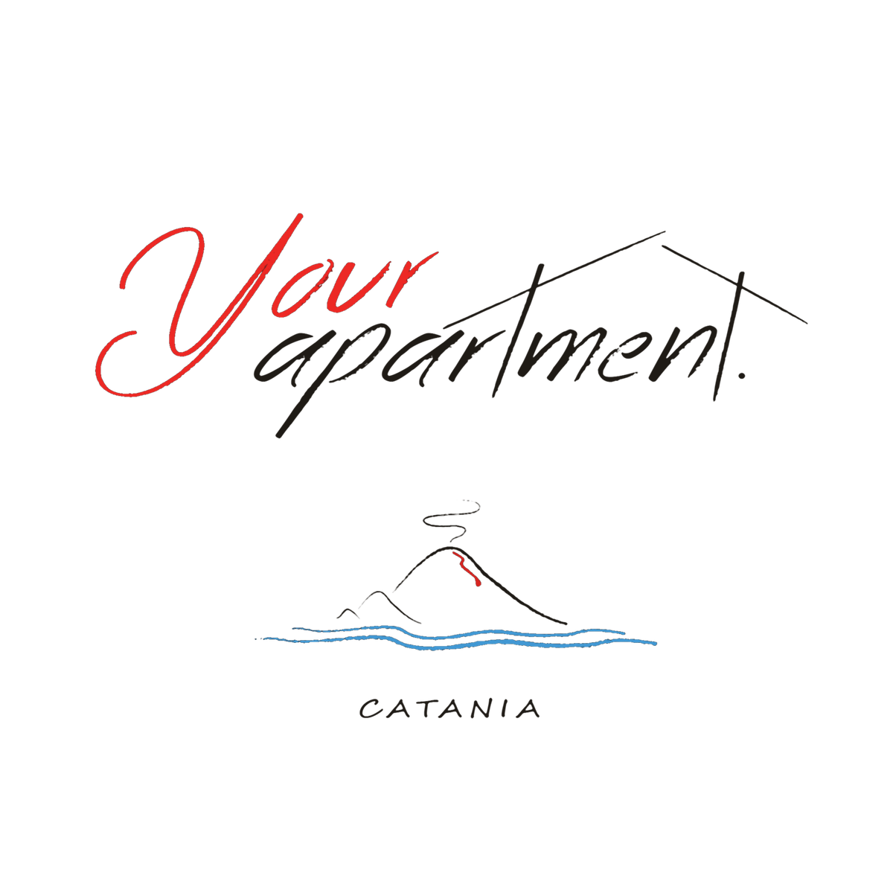
Enjoy your stay!
Via Caronda 283, CataniaMeet your host
Stefano 10+ years hosting “For me, hospitality is not just a job — it’s a true pleasure.” Read his storyMeet your host
Welcome to Your Apartment Catania.
For over ten years, I have been working in the hospitality sector between Catania and Malta with passion, professionalism, and great attention to every guest. Over the years, I have gained valuable experience that allows me to offer carefully curated and comfortable stays, making every guest feel welcomed and at home.
For me, hospitality is not just a job, but a true pleasure. I am always available to assist my guests, provide useful recommendations, and share tips to help them fully enjoy their stay while discovering the beauty of the area, the local culture, and authentic experiences.
My goal is to ensure a pleasant, relaxing, and high-quality experience, so that every stay becomes special and memorable.
Enjoy your stay!
Please find the instructions to access Your Apartment below.
Please note: you'll also have a special key (the smallest one) for the elevator, included with your set.
Before leaving the apartment, please:
Catania is a sunny city — bring sunscreen, a hat and water for daytime sightseeing, especially from late spring through early autumn.
Coffee and granita with brioche are the local way to start the morning — don't miss it.
Most shops and small restaurants close in the early afternoon and reopen in the evening — plan lunch around 1:00 PM.
Cash is still handy for small purchases at markets and kiosks, even though cards are widely accepted.
Scan to connect — or use the details below.
Point your camera here to join
Network name
Wind3 Hub-406D51
Password
880bmgx8d78cjuip
If the Wi-Fi gives you any trouble, just send Stefano a message and we'll sort it out.
There's no private parking, but you can park for free on the street. Alternatively, a 24/7 paid parking lot is just 30 metres from the building.
View the parking lotYou'll find dedicated remote controls for the air conditioning, both in the bedroom and in the living area. Please switch them off when leaving the apartment.
A coin-operated laundromat is just a short walk from the apartment, open 24/7.
View the laundromatPlease leave the rubbish bags on the street next to the building entrance only during the allowed hours, from 8:00 PM onwards. Separate the waste according to the local collection calendar — help us keep the neighbourhood clean.
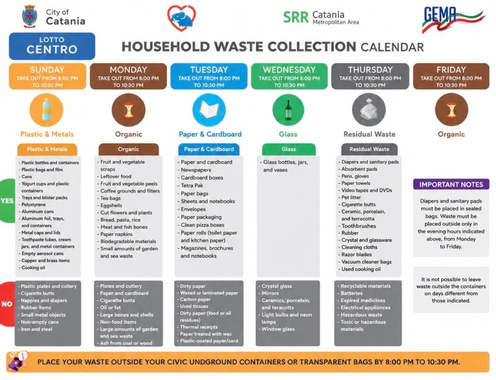
Download the official PDFMake yourself completely at home.
The kitchen is fully equipped for everything from a quick breakfast to a proper dinner — help yourself to whatever you need.
A coffee maker is ready to go, and we keep tea, coffee and sugar stocked for you — start your morning just the way you like it.
Send a message to StefanoA first-aid and emergency kit is available in each apartment.
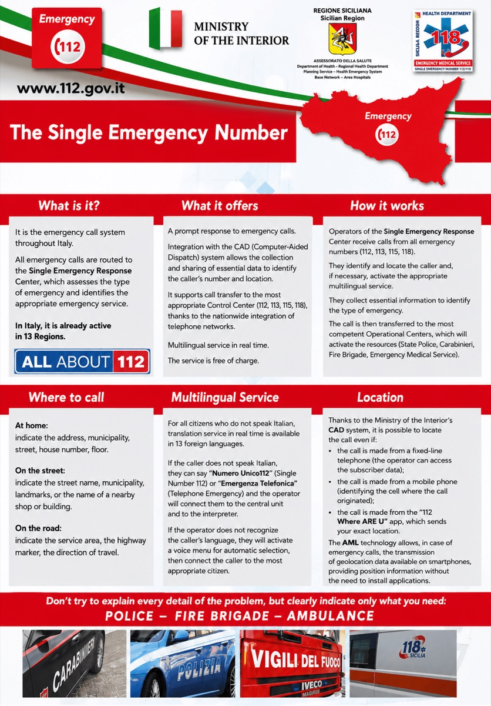
Italy's Single Emergency Number is 112 — police, fire brigade, ambulance. 112.gov.it
The closest stop is just steps from the building — convenient for reaching the city centre and the seafront.
View on mapCatania's public bus network. Check routes and schedules online.
Routes & timetablesThe historic narrow-gauge railway that loops around Mount Etna — a scenic ride through lava fields and small villages.
CircumetneaSicily-wide bus service — useful for day trips to Taormina, Siracusa, Noto and other towns.
AST SiciliaTaxis are available at official ranks across the city. The FreeNow and itTaxi apps also work in Catania.
The Alibus connects Catania Fontanarossa Airport to the city centre, running every 25 minutes from early morning to late night.
Alibus infoThe tallest active volcano in Europe — drive up to Rifugio Sapienza and continue on foot or by cable car. Sunset tours and 4×4 excursions are also widely available.
View on map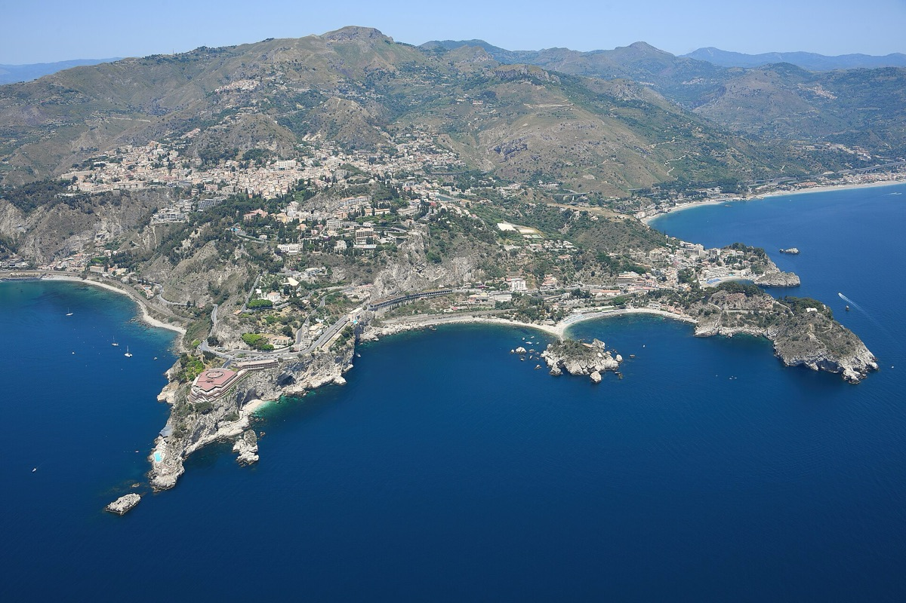
A clifftop town facing the sea, famous for its ancient Greek theatre, its medieval streets and the views over Isola Bella and the Etna coastline.
View on map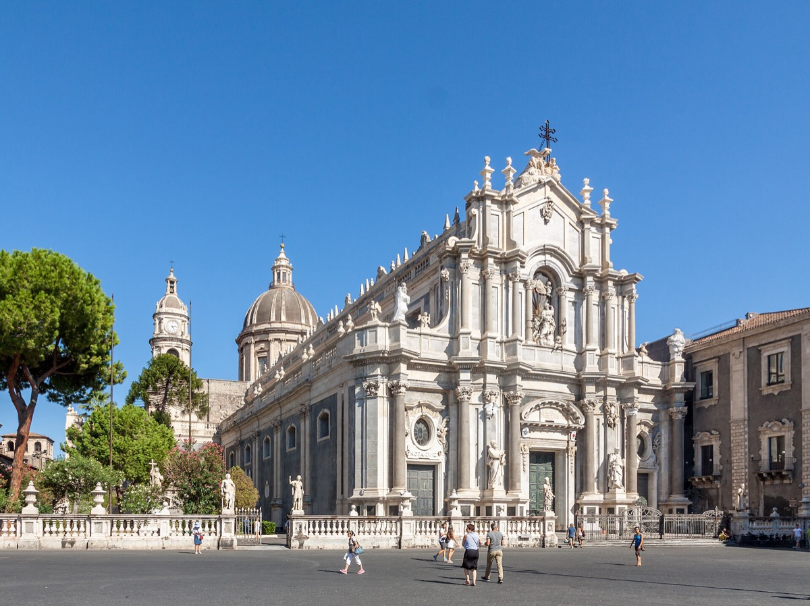
The heart of Catania — the cathedral, the Fontana dell'Elefante (u Liotru) and the lava-stone Baroque buildings that earned the city its UNESCO listing.
View on map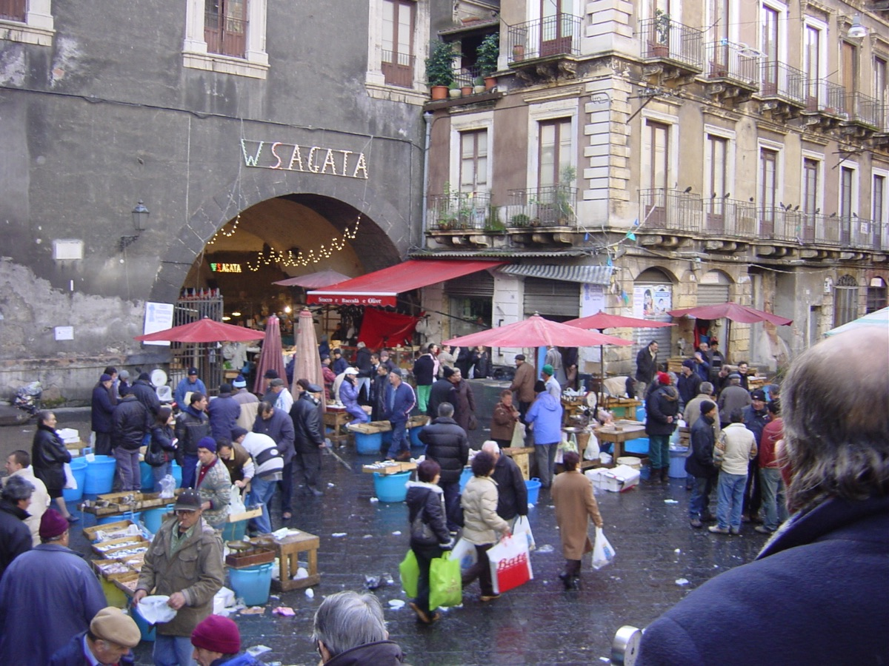
Catania's historic fish market, right behind Piazza del Duomo — best in the morning, with lively stalls, fresh seafood and traditional street food.
View on map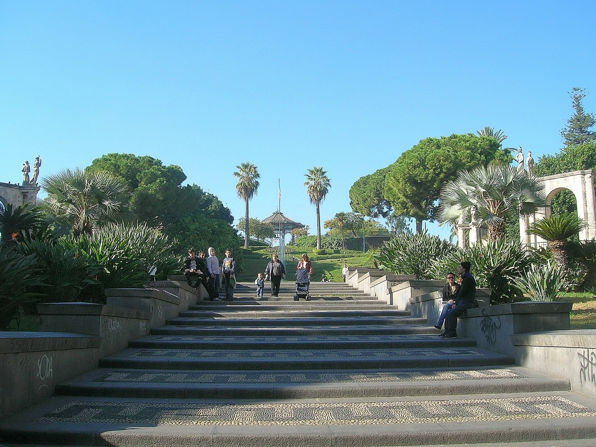
Catania's main public garden — palm-lined avenues, fountains and a flower clock, just off the main shopping street. A lovely break from the city.
View on map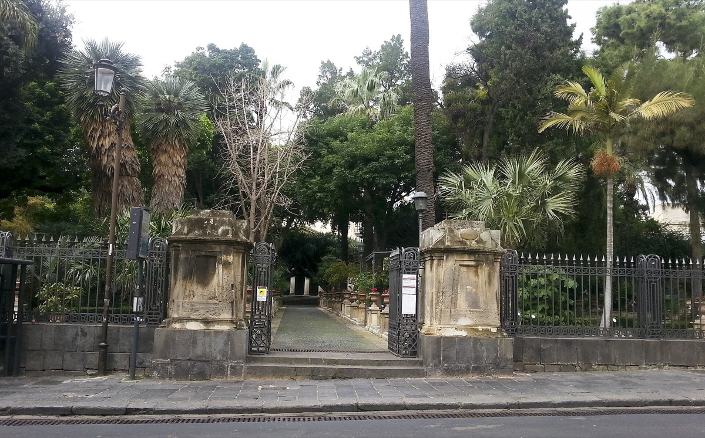
The University of Catania's botanical garden — a quiet, shaded oasis with Mediterranean and tropical plants, and a striking collection of Sicilian succulents.
View on map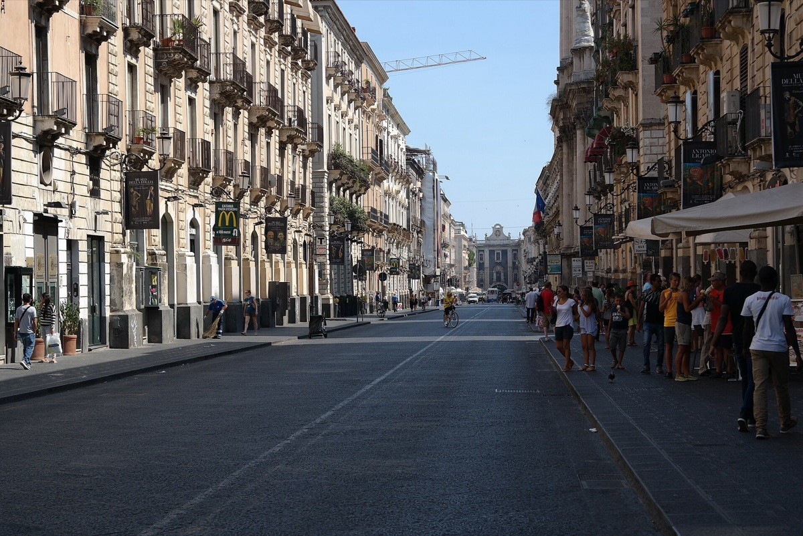
Two adjacent pedestrian streets packed with trattorias, wine bars and small restaurants — Catania's go-to spot for dinner outdoors on a warm evening.
View on map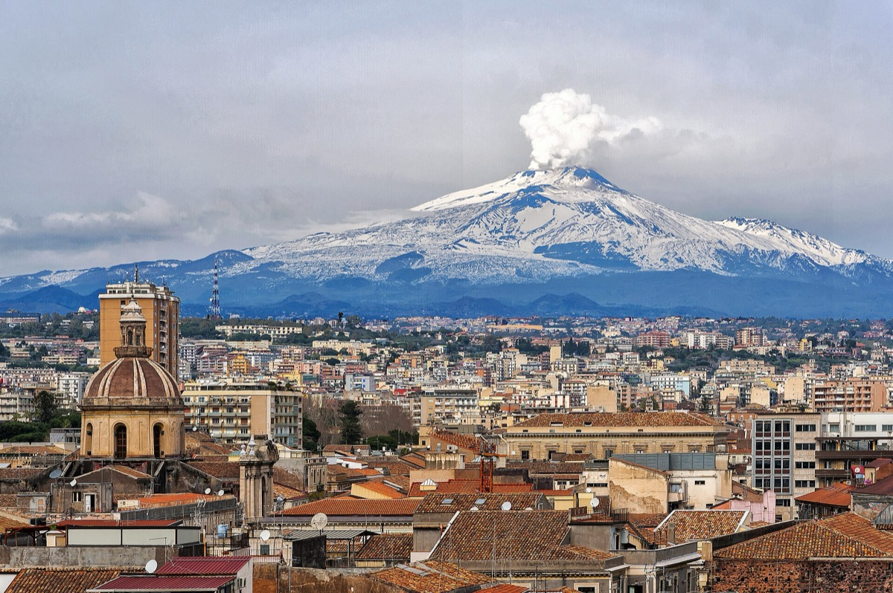
The seafront promenade — perfect for an evening stroll, a coffee with sea views, or a sunrise jog. The volcano and the sea on the same horizon.
View on map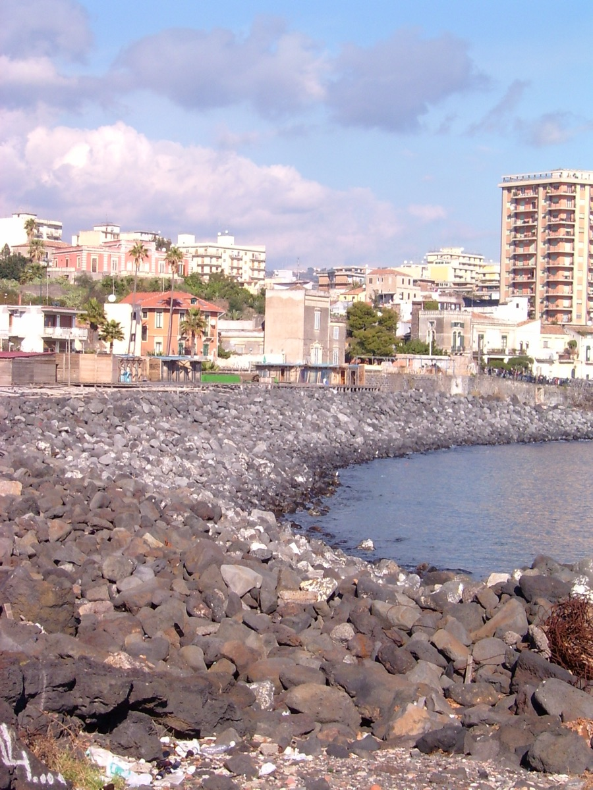
A small fishing borgo right inside the city — colourful boats pulled up onto a black-sand beach made of solidified lava. Surreal at sunset.
More info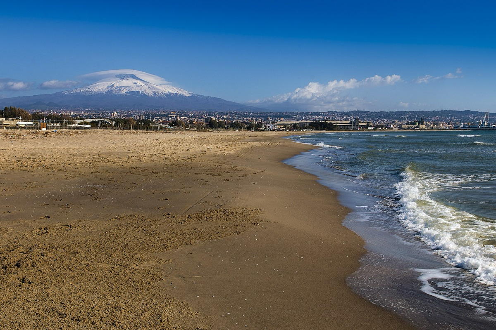
Catania's long stretch of sandy beach south of the harbour — gently shelving, family-friendly, with public sections and many lidi for the full beach-club experience.
View on map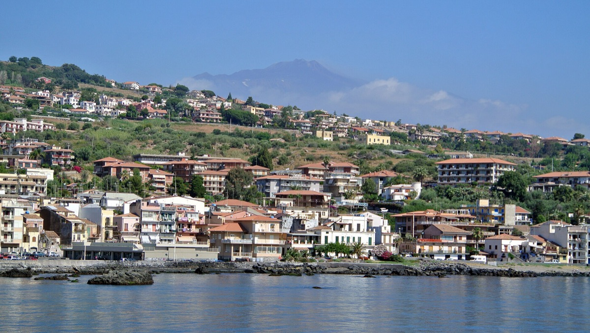
A small fishing town just north of Catania, famous for the Faraglioni dei Ciclopi — the basalt sea stacks said to have been hurled by the Cyclops in Homer's Odyssey.
View on map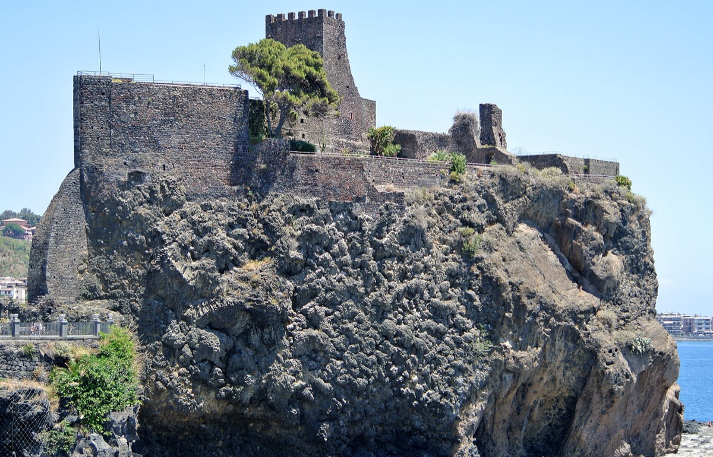
A Norman castle perched on a lava cliff overlooking the Ionian Sea — atmospheric ruins, dramatic photo spots and a small museum inside.
View on mapA few of Stefano's favourites. Tap any spot for directions.
The essentials, all within a short distance. Tap a card for directions.
Safe travels — and come back soon!
We do our best to accommodate early check-in whenever possible. If the apartment isn't ready yet, you can usually drop off your luggage and start exploring the city right away — just send Stefano a message first.
Late check-out depends on the next guest's arrival. Just ask Stefano in advance and we'll let you know what's possible.
Yes — the Wi-Fi covers the whole apartment, including the bedroom and the terrace area.
Tap water in Catania is technically potable, but locals usually prefer bottled water for taste. You'll always find some in the apartment, and the nearest supermarket has plenty.
The city tax is paid in cash at check-out — just leave it on the kitchen table together with the keys. The amount depends on the number of guests and nights.
The easiest option is the Alibus, which runs every ~25 minutes between the city centre and Catania Fontanarossa Airport. A taxi takes about 15 minutes outside of rush hours.
Have a look at the Your Nearest section — the closest supermarket and pharmacy are mapped there.
Just send Stefano a message — issues with the Wi-Fi or the air conditioning are usually fixed within the same day.
"Great location for exploring Catania on foot — we walked to the Duomo and the seafront every day. The apartment is bright, comfortable and full of personality. Stefano was always reachable and quick to reply."
"Perfect base for a few days in Sicily. The terrace was our favourite spot in the evening. Stefano shared lots of useful tips for restaurants and day trips — we ended up going to Aci Trezza thanks to him."
If you enjoyed your stay, please let us know by leaving a review on Booking or Airbnb.
Thank you!